ニュース
2019年12月11日 4S インターンシップ報告会
 2019年12月11日，インターンシップ参加者(4年生33名)多数のため発表会場を3つに別け，インターンシップ報告会を開催しました．
2019年12月11日，インターンシップ参加者(4年生33名)多数のため発表会場を3つに別け，インターンシップ報告会を開催しました．
2019年12月10日 恩田小学校出前授業
 2019年12月10日，恩田小学校(6年生1クラス)にて宇部高専制御情報工学科江原教授が出前授業を行いました．
2019年12月10日，恩田小学校(6年生1クラス)にて宇部高専制御情報工学科江原教授が出前授業を行いました．
2019年11月9日 第2回オープンキャンパス
 2019年11月9日，第2回オープンキャンパスを開催しました．
2019年11月9日，第2回オープンキャンパスを開催しました．
2019年11月3日 宇部まつり
 2019年11月3日，宇部高専は宇部まつりのキャンパス広場にブースを出展しました．
2019年11月3日，宇部高専は宇部まつりのキャンパス広場にブースを出展しました．
2019年10月16日 3S 工場見学研修
 2019年10月16日～18日の2泊3日で，東京へ工場見学旅行へ行きました．
2019年10月16日～18日の2泊3日で，東京へ工場見学旅行へ行きました．
2019年8月27日 令和元年度山口県内3高専合同学校説明会
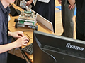
山口県内3高専(宇部高専，徳山高専，大島商船高専)の学校説明会を開催しました．2019年8月10日 第1回オープンキャンパス
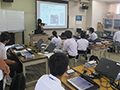
第1回オープンキャンパスを開催しました．2019年3月22日 平成30年度卒業式・修了式
2019年3月22日，平成30年度卒業式・修了式が挙行されました
2019年1月30日 5S 卒業研究Ⅱ発表会
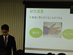
卒業研究Ⅱ発表会を開催しました．最終学年5年生が一年間の研究成果を発表しました2019年1月22日 4S 卒業研究Ⅰ発表会
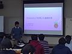
卒業研究Ⅰ発表会を開催しました．各研究室の指導教員の指導の下，一年間の研究成果を発表しました。2018年11月15日 4S インターンシップ報告会
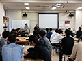
参加者(39名)多数のため発表会場を2つに別け，インターンシップ報告会を開催しました。2018年11月10日 第2回オープンキャンパス
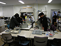
第2回オープンキャンパスを開催しました．制御情報工学科では，学科別体験学習として6テーマのブースを設けました。2018年10月17日 3S 工場見学研修
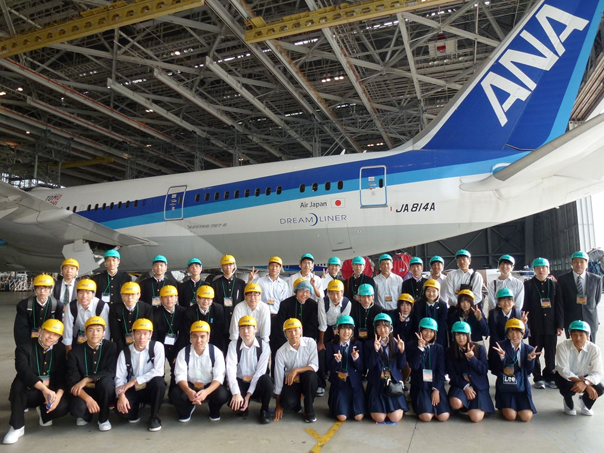
2018年10月17日～19日の2泊3日で，関東方面へ工場見学旅行へ行きました。2018年8月4日 第1回オープンキャンパス
2018年8月4日，第1回オープンキャンパスを開催しました
2017年11月30日 神原中学校で出前授業を行いました。
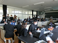
2017年11月30日、制御情報工学科の学生さんが神原中学校において出前授業を行いました。「レゴロボットを制御しよう！」と題し、１年生の皆様に、レゴで作成されたロボットを、音に合わせて動かすプログラミングの授業を行いました。2016年10月20日 本科4年生が2泊3日で工場見学旅行に行ってきました。
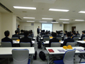
4年時に実施される最後の工場見学旅行に行ってきました。今年度は新幹線を利用して、新山口から京都を経由し横浜に移動しました。2017年10月08日 ETロボコン2017中四国地区大会で優勝しました。
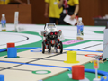
10月8日（日）に福山大学で開催されたETロボコン2017中四国地区大会において，本校のETロボコン同好会メンバーによるチーム「パズどす」がデベロッパー部門アドバンストクラス総合優勝に輝き，全国大会出場権を昨年度に続き獲得しました。2017年08月05日 宇部高専第１回オープンキャンパスが開催されました。
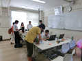
2017年8月5日、宇部高専第１回オープンキャンパスが開催されました。制御情報工学科におきましては、２３７名の中学生の皆様にご参加いただき、様々なテーマでの体験学習を行いました。2017年03月23日 卒業式及び専攻科修了式が行われました。
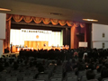
2017年3月23日に宇部工業高等専門学校５年生の卒業式及び専攻科２年生の修了式が行われました。2016年10月06日 ３年生が１泊２日で合宿研修を行いました。
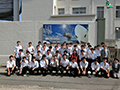
2016年10月06日07日に、宇部高専では合宿研修を行いました。制御情報工学科３年生の皆さんが、（株）三菱重工業下関造船所（山口県下関市）、（株）安川電機みらい館（福岡県北九州市）、九州工業大学情報工学部（福岡県飯塚市）を訪問し、見学いたしました。2016年10月05日 ４年生が２泊３日で工場見学旅行に行ってきました。
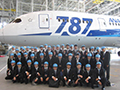
今年度も2泊3日で関東方面へ工場見学旅行に行って来ました。初日は全日本空輸株式会社機体整備工場と、三菱みなとみらい技術館、2日目は富士通株式会社川崎工場と宇宙航空研究開発機構筑波宇宙センター、最終日はCEATEC JAPAN2016を見学させて頂きました。2016年8月18日 徳山高専オープンキャンパスに制御情報工学科がブースを出展しました。
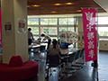
2016年08月18日、徳山高専にて開催されたオープンキャンパスに制御情報工学科の展示ブースを出展しました。2016年8月6日 宇部高専第１回オープンキャンパスが開催されました。
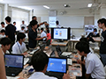
2016年8月6日、宇部高専第１回オープンキャンパスが開催されました。制御情報工学科におきましては、１４０名の中学生の皆様にご参加いただき、様々なテーマでの体験学習を行いました。2016年6月25日 山口県内 3高専合同学校説明会 (下関会場) が開催されました。
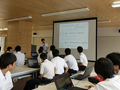
2016年6月25日、下関市立川中中学校において、山口県内 3高専合同学校説明会が開催されました。制御情報工学科は、模擬授業 (経営情報学科と合同で開催) と展示ブースの出展を行いました。2016年03月28日 ナンヤンポリテクニックの学生と先生が制御情報工学科の研究室を見学されました。
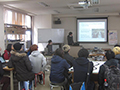
ナンヤンポリテクニック（シンガポール共和国）と宇部高専は、協定調印式を行い学生交流プログラムの実施、教員間の交流、共同研究の推進などを目的とした学術交流協定を締結しています。2016年03月23日 制御情報工学科の小野田久美子さんが準優勝されました。
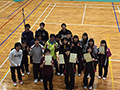
第42回中国・四国地区高等専門学校バドミントン大会において，制御情報工学科４年の小野田久美子さんが，宇部高専バドミントン部（女子）団体で準優勝されました。2016年03月17日 卒業式及び専攻科修了式が行われました。
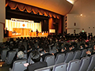
2016年3月17日に宇部工業高等専門学校５年生の卒業式及び専攻科２年生の修了式が行われました。2016年02月25日 特別講義「GR-PEACH を使って IoT を体験しよう」が開催されました。
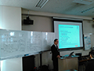
株式会社京都ソフトウェアリサーチの田中康之氏と小石隼氏による特別講義「GR-PEACH を使って IoT を体験しよう」が制御情報工学科4年生を対象として開催されました。2016年02月23日 ナンヤンポリテクニックの先生が制御情報工学科の研究室を見学されました。
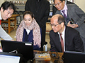
ナンヤンポリテクニック（シンガポール共和国）と宇部高専は、協定調印式を行い学生交流プログラムの実施、教員間の交流、共同研究の推進などを目的とした学術交流協定を締結しました。2016年02月19日 制御情報工学科 4年の小野田久美子さんが宇部市体育協会優秀選手表彰を受賞
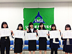
第50回全国高等専門学校体育大会兼第39回全日本高等専門学校バドミントン選手権大会において，団体第三位の小野田久美子さんが宇部市体育協会優秀選手表彰を受賞しました。2016年02月18日 専攻科特別研究発表会を行いました。
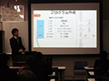
専攻科の特別研究発表会が開催され、制御情報工学科から生産システム工学専攻に進学した7名の学生が、専攻科で行った研究内容を発表しました。2016年02月04日 卒業研究発表会が行われました。
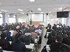
2016年02月04日、制御情報工学科５年生による卒業研究発表会が行われました。2015年11月07日 宇部高専第２回オープンキャンパスが行われました。
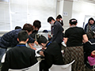
2015年11月07日、宇部高専第２回オープンキャンパスが行われました。制御情報工学科では、当学科でどのようなことを学んでいるかを体験していただくために、学科の紹介を兼ねた工学実験や、４つのテーマの中からご自分でお好きなテーマを選んでいただく体験学習を開催し、多数の中学生の皆様にご参加いただきました。2015年10月30日 やまぐち総合ビジネスメッセ2015インターンシップ報告会に参加しました。
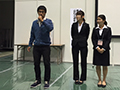
2015年10月30,31日の日程で周南市のキリンビバレッジ周南総合スポーツセンターにおいてやまぐち総合ビジネスメッセ2015が実施されましたが，そこで実施されたインターンシップ報告会において，制御情報工学科4年の澤勢君が今夏に参加したインターンシップについて報告をおこないました。2015年10月11日 制御情報工学科の湯面君，貞弘君，江谷君がプロコンに参加しました。
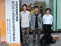
2015年10月11，12日の日程で長野県ホクト文化ホールにおいて全国高専プログラミングコンテスト（通称プロコン）が実施され，制御情報工学科4年の湯面君，貞弘君，3年の江谷君からなるチームが予選を勝ち抜け，競技部門本選に出場しました。2015年10月08日 ３年生が１泊２日で合宿研修を行いました。
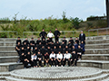
平成27年度の合宿研修では、1日目は就職希望者向けとして、不二輸送機工業株式会社（山陽小野田市）と三菱重工業株式会社下関造船所（下関市）の工場見学を行いました。2015年10月07日 ４年生が２泊３日で工場見学旅行に行ってきました。
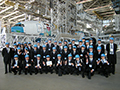
今年度も2泊3日で関東方面へ工場見学旅行に行って来ました。初日は全日本空輸株式会社機体整備工場と国立情報学研究所、2日目は富士通株式会社川崎工場と宇宙航空研究開発機構筑波宇宙センター、最終日はCEATEC JAPAN2015を見学させて頂きました。2015年08月28日 専攻科１年生の末安君がBest Student Paper Awardを受賞しました。
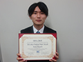
8月26日から28日にかけて千葉県で開催された国際ワークショップInternational Workshop on Smart Info-Media Systems in Asia (SISA2015)で、制御情報工学科から専攻科生産システム工学専攻に進学した末安慶大君がBest Student Paper Awardを受賞しました。2015年08月24日 制御情報工学科の小野田久美子さんが、第３位に入賞いたしました。
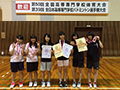
2015年08月23〜24日に開催された、第50回全国高等専門学校体育大会兼第39回全日本高等専門学校バドミントン選手権大会において、制御情報工学科４年生小野田久美子さんが、宇部高専バドミントン部（女子）団体で第３位に入賞いたしました。2015年08月18日 徳山高専オープンキャンパスに制御情報工学科ブースを出展しました。
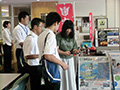
2015年08月18日、徳山高専にて開催されたオープンキャンパスに制御情報工学科の展示ブースを出展しました。マトリクスLEDによる電光掲示板・2輪倒立振子ロボット・タブレット端末で制御するラジコンカーを展示しました。2015年08月12日 ３高専合同学校説明会が山口市で開催されました。
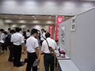
2015年08月12日、山口市民会館で、宇部高専・徳山高専・大島商船高専の、3高専合同学校説明会（徳山高専主催）が開催されました。制御情報工学科は展示ブースを出展し、タブレット端末で制御するラジコンカーのデモンストレーションを行いました。2015年08月08日 第１回オープンキャンパスが開催されました。
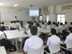
宇部高専第１回オープンキャンパスが開催されました。制御情報工学科におきましては、９９名の中学生の皆様（うち女子学生１９名）にご参加いただき、学科の紹介や、様々なテーマでの体験学習、在校生との懇談会を行いました。2015年07月25日 ３高専合同学校説明会が開催されました。
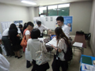
岩国市福祉会館で、宇部高専、徳山高専、大島商船高専の、３高専合同学校説明会（大島商船高専主催）が開催されました。2015年07月04日 制御情報工学科4年生の石井さんが優勝しました。
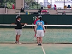
2015年7月4日から5日にかけて宇部マテ“フレッセラ”テニスコートで開催された中国地区高等専門学校体育大会ソフトテニス競技女子シングルスの部において、制御情報工学科4年生の石井唯さんが優勝しました。2015年06月20日 ３高専合同説明会（宇部高専主催）が開催されました。
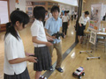
下関市立川中中学校で、宇部高専、徳山高専、大島商船高専の、３高専合同説明会（宇部高専主催）が開催されました。2015年05月28日 國立聯合大学（台湾）の韓教授が制御情報工学科を訪問されました。
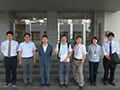
台湾の苗栗市にある國立聯合大学の韓欽銓（Chin-Chuan Han）教授が制御情報工学科を訪問されました。2015年05月12日 宇部高専で前期クラスマッチが開催されました。
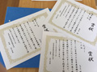
制御情報工学科５年生が、クラスマッチで総合優勝しました。2015年04月30日 春休み国際交流発表会を行いました。
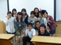
昨年度の春休み（3/8～3/28）に、台湾の國立聯合大学に短期留学された学生の皆さんによる国際交流発表会が開かれました。制御情報工学科からは４人の学生の方が短期留学し、発表いたしました。2015年03月31日 杉本信行先生が定年退職されました。
これまで29年にわたって教育・研究に携わってこられた制御情報工学科教授の杉本信行先生が今年度をもって定年退職を迎えられました。
2015年03月18日 卒業式が行われました。
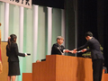
宇部市渡辺翁記念会館に於いて卒業式が行われ、制御情報工学科44名の学生が卒業しました。2015年02月18日 専攻科特別研究発表会を行いました。
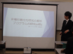
専攻科の特別研究発表会が実施され、制御情報工学科から専攻科生産システム工学専攻に進学した5名の学生が、専攻科で行った研究内容を発表しました。2015年02月04日 卒業研究発表会を行いました。
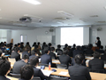
卒業研究発表会が開催され、制御情報工学科5年生による卒業研究の発表が行われました。制御情報工学科では、学生は4年次に各研究室に配属され、2年間に渡って卒業研究に取り組みます。2015年01月29日 卒業研究中間発表会を行いました。
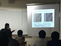
4年生による卒業研究の中間発表が行われました。制御情報工学科では、学生は4年次に各研究室に配属され、2年間に渡って卒業研究に取り組みます。2014年12月11日 見初小学校での出前授業を行いました。
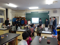
制御情報工学科の学生が見初小学校において、5年生向けの出前授業を行いました。2014年12月11日 神原中学校での出前授業を行いました。
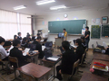
制御情報工学科の学生が神原中学校において、出前授業を行いました。2014年11月27日 小野小学校での出前授業を行いました。
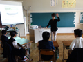
制御情報工学科の学生が小野小学校において、3～6年生向けの出前授業を行いました。2014年11月26日 インターンシップ報告会を行いました。
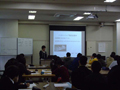
インターンシップ報告会を実施し、インターンシップに参加した制御情報工学科4年生が、インターンシップ先でどのような体験を行ったか報告しました。2014年11月15日 第2回オープンキャンパスを行いました。
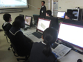
宇部高専第2回オープンキャンパスが実施され、50名の中学生（うち女子10名）が、制御情報工学科の体験学習に参加されました。2014年10月10日 4年生が二泊三日で工場見学旅行に行ってきました。
今年度は、ANA機体整備工場、富士通株式会社、日本オーチス・エレベータ株式会社を訪問し、工場や製品などを見学させて頂きました。
2014年10月09日 3年生が一泊二日で合宿研修を行ってきました。
平成26年度の合宿研修では、1日目は就職希望者向けとして、不二輸送機工業株式会社（山陽小野田市）とJRCS株式会社豊浦製作所（下関市）の工場見学を行いました。
2014年08月25日 オープンキャンパスを行いました。
宇部高専のオープンキャンパスが実施されました。制御情報工学科にも103名の中学生（うち女子19名）に参加して頂き、学科の紹介や様々なテーマでの体験学習、在学生とのフリートークを行いました。
2014年08月19日 公開講座「プログラミングによる計測・制御入門」を開催しました。
伊藤直樹先生による公開講座「プログラミングによる計測・制御入門」を開催しました。参加者は小学生4名 （5，6年生），中学生5名の計 9名でした。
2014年08月18日 山口県内3高専の合同説明会に参加しました。
山口県内3高専の合同説明会に参加し、学科の紹介を行いました。参加して頂いた中学生に、ETロボコンで使用しているロボットや、卒業研究で作製した作品の紹介などを行いました。
2014年02月05日 5年生の卒業研究発表会を行いました。
43名の5年生が卒業研究の成果を発表しました。発表会では、一人当たり10分間（発表７分、質疑応答3分）の持ち時間を利用し、しっかりと発表していました。
2013年11月09日 第2回オープンキャンパスを行いました。
県内の各地より42名の参加を頂きました。制御情報工学科は、情報通信技術を駆使し、ロボットなどのシステムを制御することのできる技術者を養成することを目指した学科です。
2013年10月05日 4年生が2泊3日の工場見学旅行に行ってきました。
今年度は、東京を中心に、関東の企業を見学させて頂きました。
2013年10月03日 3年生が一泊二日で合宿研修を行ってきました。
平成25年度の合宿研修では、就職希望者向けとして、新日鐵住金八幡製鐵所と三菱重工業下関造船所の工場見学を行いました。
2014年11月15日 第2回オープンキャンパスを行いました。
宇部高専第2回オープンキャンパスが実施され、50名の中学生（うち女子10名）が、制御情報工学科の体験学習に参加されました。
2014年10月10日 4年生が二泊三日で工場見学旅行に行ってきました。
今年度は、ANA機体整備工場、富士通株式会社、日本オーチス・エレベータ株式会社を訪問し、工場や製品などを見学させて頂きました。
2014年10月09日 3年生が一泊二日で合宿研修を行ってきました。
平成26年度の合宿研修では、1日目は就職希望者向けとして、不二輸送機工業株式会社（山陽小野田市）とJRCS株式会社豊浦製作所（下関市）の工場見学を行いました。
2014年08月25日 オープンキャンパスを行いました。
宇部高専のオープンキャンパスが実施されました。制御情報工学科にも103名の中学生（うち女子19名）に参加して頂き、学科の紹介や様々なテーマでの体験学習、在学生とのフリートークを行いました。
2014年08月19日 公開講座「プログラミングによる計測・制御入門」を開催しました。
伊藤直樹先生による公開講座「プログラミングによる計測・制御入門」を開催しました。参加者は小学生4名 （5，6年生），中学生5名の計 9名でした。
2014年08月18日 山口県内3高専の合同説明会に参加しました。
山口県内3高専の合同説明会に参加し、学科の紹介を行いました。参加して頂いた中学生に、ETロボコンで使用しているロボットや、卒業研究で作製した作品の紹介などを行いました。
2014年02月05日 5年生の卒業研究発表会を行いました。
43名の5年生が卒業研究の成果を発表しました。発表会では、一人当たり10分間（発表７分、質疑応答3分）の持ち時間を利用し、しっかりと発表していました。
2013年11月09日 第2回オープンキャンパスを行いました。
県内の各地より42名の参加を頂きました。制御情報工学科は、情報通信技術を駆使し、ロボットなどのシステムを制御することのできる技術者を養成することを目指した学科です。
2013年10月05日 4年生が2泊3日の工場見学旅行に行ってきました。
今年度は、東京を中心に、関東の企業を見学させて頂きました。
2013年10月03日 3年生が一泊二日で合宿研修を行ってきました。
平成25年度の合宿研修では、就職希望者向けとして、新日鐵住金八幡製鐵所と三菱重工業下関造船所の工場見学を行いました。
2013年08月20日 宇部高専広報イベント（下関ゆめシティ）に参加しました。
宇部市内ときわ公園でのイベントに引き続き、下関ゆめシティにて開催された宇部高専広報イベントに参加しました。
2013年08月09日 宇部高専広報イベント（ときわ公園）に参加しました。
宇部市内ときわ公園にて開催された「子ども科学館inときわ 科学の世界を体験しよう！」に参加しました。
2013年08月08日 平成25年度第1回体験入学（オープンキャンパス）を行いました。
84名の中学生（うち女子7名）に参加して頂き、今年度も、制御情報工学科の紹介、様々なテーマでの体験学習、在学生とのフリートークを行いました。
2013年07月31日 合同学校説明会で模擬授業を行いました。
アスピラート（防府市地域交流センター）において、宇部高専と徳山高専の合同学校説明会を行いました。
2013年03月31日 山根健治先生が定年退職されました。
これまで30有余年にわたって教育・研究に携わってこられた制御情報工学科教授の山根健治先生が今年度をもって定年退職を迎えられました。
2013年02月13日 1月30日に病気欠席のため発表できなかった4年生2名の卒業研究中間発表会を行いました。
発表会には制御情報工学科の4年生と教員が出席しました。発表者は1年間の学習成果を5分間（および質疑応答2分間）にまとめて発表しました。
2013年02月10日 情報オリンピック日本委員会主催の日本情報オリンピック本選に参加しました。
本大会は、日本の高校生以下の生徒・学生の情報科学的能力を高めることを目指して行われるもので、成績優秀者は国際情報オリンピックに出場することが出来ます。制御情報工学科2年生の金子君が、全国高専プログラミングコンテスト競技部門の優勝チーム特典を受け、本選に招待され参加しました。
2013年02月06日 5年生の卒業研究発表会を行いました。
36人の5年生が卒業研究の成果を発表しました。発表会では、1人あたり10分間（発表7分、質疑応答3分）の持ち時間を利用し、しっかりとまとめて発表していました。
2013年02月05日 JSTサイエンスパートナーシッププロジェクト（全4回）を終了しました。
宇部市立小野中学校2年生に参加いただき、ライントレースの競技会を行いました。この競技会は、JSTのサイエンスパートナーシッププロジェクト助成によるもので、組込み技術の初歩を勉強し、情報科学の楽しさを味わってもらうために開催したもので、計4回実施しました。
2013年01月30日 4年生の卒業研究中間発表会を行いました。
インフルエンザ等による欠席者を除く43人の4年生が卒業研究の中間発表を行いました。制御情報工学科では、4年次から各研究室に配属され、4年生の1年間で、5年の卒業研究に必要な知識や技術を習得します。
2012年12月13日 神原中学校で出前授業を行いました。
12月13日に神原中学校において、制御情報工学科の教員と学生で出前授業を行いました。神原中学校の2年生3クラスに対して制御情報工学科の専門科目に関する3種類の授業を行いました。
2012年11月27日 小野中学校１・2年生を本学にお迎えして「制御プログラミング入門」を行いました。
本学制御棟3階にある制御情報工学実習室に小野中学校1年生および2年生をお迎えし、制御情報工学科スタッフによる「制御プログラミング入門」を行いました。
2012年11月14日 ETロボコン2012全国大会に中四国地区代表として出場しました。
神奈川県横浜市のパシフィコ横浜においてETロボコン2012全国大会が行われました。この大会は、若手の組み込み技術者育成を目的として一般社団法人組込みシステム技術協会が主催するもので、全国から出場した337チームによる予選を勝ち上がった40チームがロボット走行競技を行いました。
2012年11月10日 第2回オープンキャンパスを行いました。
県内の各地より46名の参加を頂きました。制御情報工学科は、情報通信技術を駆使し、ロボットなどのシステムを制御することのできる技術者を養成することを目指した学科です。したがって、コンピュータのソフトウェアやハードウェアに関する勉強はもちろんですが、ロボットなどの動きをとらえるセンサやその動きを操る制御などに関する勉強もあります。
2012年11月04日 「第61回宇部まつりキャンパス広場」に出展しました。
第61回宇部まつり・キャンパス広場に制御情報学科と物質工学科の２学科が出展しました。制御情報学科からは「マイコン自動車を動かしてみよう」、「プラ板キーホルダー作り」の２つを展示し、マイコン自動車を動かすプログラム作りや、透明なプラスチックの板に好きな絵を書いて、それをオーブントースターで加熱してキーホルダーにする工作を体験してもらいました。当日は大勢の方々にご来場頂き、盛況でした。
2012年11月01日 4年生のインターンシップ報告会を行いました。
企業等で就業体験を行う「インターンシップ」に、制御情報工学科4年生のうち32名が夏季休業期間中に参加しました。本日の報告会では、インターンシップ先企業等の紹介や、体験内容、インターンシップによって得た知見等についてインターンシップ参加者によるプレゼンテーションが行われ、参加した4年生、3年生、および教員との活発な質疑応答が行われました。
2012年10月27日 「こども科学館inときわ～科学の世界を体験しよう～」に出展しました。
宇部市ときわ公園内にある「ときわレストハウス」の２階で行われた 「こども科学館inときわ～科学の世界を体験しよう～」に出展しました。今回は、TVリモコンでミニカーの操縦をしたり，手や頭にセンサを装着して、身体の動きで操縦もしてもらいました。
2012年10月14日 プログラミングコンテストで優勝しました。
福岡県大牟田市の大牟田文化会館において全国高等専門学校第23回プログラミングコンテストが行われました。宇部高専からはコンピュータ部の学生３人（制御情報工学科5年・石田君、同科4年・大濱君、同科2年・金子君）が競技部門に出場し、全国優勝の快挙を成し遂げ、文部科学大臣賞等を受賞しました。
2012年10月05日 3年生が一泊二日で合宿研修を行ってきました。
平成24年度の合宿研修では、三菱重工業下関造船所とアドバンテスト九州システムズの工場見学を行いました。また北九州高専を訪問し、北九州高専の制御情報工学科３年生の学生と交流を行いました。
2012年10月05日 4年生が二泊三日で工場見学旅行に行ってきました。
旅行では、これから社会に羽ばたくための研修を兼ねて、「卒業生の所属する会社訪問」「最先端の研究見学」「テーブルマナー講習」を行いました。
2012年08月31日 県内３高専合同説明会～科学の世界を体験しよう～ に出展しました。
下関市の「ゆめシティ」において，「県内３高専合同説明会～科学の世界を体験しよう～」と題した広報イベントに出展しました。今回の制御情報工学科のブースでは、「センサ回路の製作・実験」と題して光センサを用いた簡易常夜灯の製作と簡単な実験を行いました。保護者の方々もお子さんと一緒に製作に取組まれていました。
2012年08月23日 第1回オープンキャンパスを行いました。
昨年度から、各教員が行う体験学習と並行して、中学生と制御情報工学科在学生とのフリートークの時間を設けました。これは、中学生が進路を決定する際に、在学生の生の声をぜひ聞いてもらいたいという試みから始めたものです。中学生の皆さんも最初は緊張した面持ちでしたが、後半では和やかな雰囲気の中、在学生と様々な情報交換を行っていました。
2012年02月09日 5年生の卒業研究発表会を行いました。
40人の5年生が卒業研究の成果を発表しました。発表会では、1人あたり10分間（発表7分、質疑応答3分）の持ち時間を利用して、それぞれが約1年間かけて行った研究について、しっかりとまとめて発表していました。
2012年01月26日 4年生の卒業研究中間発表会を行いました。
38人の4年生が卒業研究の中間発表を行いました。制御情報工学科では、4年次から各研究室に配属され、4年生の1年間で、5年の卒業研究に必要な知識や技術を習得します。中間発表会では、2つの会場に分かれて、1人あたり7分間（発表5分、質疑応答3分）の持ち時間を利用して、約1年間かけて習得した内容について各学生がしっかりと発表していました。
2011年12月18日 宇部高専広報イベントに参加しました。
8月に開催された下関シーモール、ロックシティ防府に引き続き、宇部市内ときわ公園にて開催された「子ども科学館inときわ 科学の世界を体験しよう！」に参加しました。制御情報工学科からは、2輪で移動するロボットの操縦を体験してもらうコーナーを出展し、子どもたちにロボットを操縦する楽しさを知ってもらいました。
2011年11月12日 平成23年度第2回体験入学（オープンキャンパス）を行いました。
第1回に引き続き、各教員による体験学習の時間と並行して、制御情報工学科在学生とのフリートークの時間を設けましたが、今回も好評でした。
2011年11月12日 第48回高専祭で市民向け工学実験を行いました。
高専祭のイベントの一環として、制御情報工学科4年生による公開工学実験を行いました。この実験では、一般市民の方や宇部市少年少女発明クラブの皆さんをお招きして、ライントレースカー（黒い線に沿って移動する車型ロボット）を使った実験を行って頂きました。
2011年10月06日 4年生が2泊3日の工場見学旅行に行ってきました。
今年度は、大阪から名古屋を経由して、東京まで見学に行きました。見学先は、株式会社資生堂大阪工場、株式会社モリタ製作所、ブラザー工業株式会社、トヨタ自動車株式会社、株式会社富士通ミッションクリティカルシステムズ（訪問順）です。企業の方の丁寧なご説明に、学生達も聞き入っていました。
2011年10月05日 3年生が1泊2日の合宿研修に行ってきました。
今年度は、初日に九州旅客鉄道株式会社、TOTO株式会社を見学した後、火の山ユースホステルに宿泊し、2日目に新日本製鐵株式会社を見学させて頂きました。
2011年08月26日 平成23年度第1回体験入学（オープンキャンパス）を行いました。
今年度から、各教員が行う体験学習と並行して、中学生と制御情報工学科在学生とのフリートークの時間を設けました。これは、中学生が進路を決定する際に、在学生の生の声をぜひ聞いてもらいたいという試みから始めたものです。中学生の皆さんも最初は緊張した面持ちでしたが、後半では和やかな雰囲気の中、在学生と様々な情報交換を行っていました。